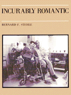

<body bgcolor="#FFFFFF" text="#000000" link="#0000FF" vlink="#CC0000" alink="#CC0000"><center><hr width="350" size="1" align="center" noshade>Combining dialogue with photographs of couples at a private, total care institution, Stehle portrays love relationships among the severely disabled<hr width="350" size="1" align="center" noshade><p><a href="https://cdcshoppingcart.uchicago.edu/Cart/ChicagoBook.aspx?ISBN=9780877223078&&PRESS=temple" target="_top">Buy this book!</a> | <a href="https://cdcshoppingcart.uchicago.edu/Cart/Cart.aspx?PRESS=temple" target="_top">View Cart</a> | <a href="https://cdcshoppingcart.uchicago.edu/Cart/Cart.aspx?PRESS=temple" target="_top">Check Out</a></p><p></p></center><!--none//--><h1>Incurably Romantic</h1>
<h3>Bernard F. Stehle, afterword by Joseph Schneider</h3>
<P>cloth 0-87722-307-6 $29.95, Apr 85, <FONT COLOR=#990033>Out of Print</FONT>
<BR> 256 pp
130&nbsp;halftones
</P><h3 align="center"><P><font color="#996633">Philadelphia Book Clinic Certificate of Award,
1986</font></P>
</H3>
<p>The people we meet in Bernard Stehle's <I>Incurably Romantic</I> are physically disabled, some severely. Their conditions range from cerebral palsy, muscular dystrophy, multiple sclerosis to multiple disabilities, yet they are still lovers and are loved. They speak to us of affection, intimacy, sadness, need, joy, and hope.
<p>Our culture places a high premium on how people look: those considered "beautiful" or "handsome" become our personal models or Ideals; those considered "unattractive" and physically "abnormal" become, by extension, less personally worthy. Such meanings even contribute to our sense that love&#151being a lover and loved&#151is incongruous with physical (and surely mental) disabilities.
<p>Combining dialogue with photographs of couples at a private, total care institution in Philadelphia, known formerly as The Philadelphia Home for Incurables, Stehle portrays love relationships among the severely disabled. Most important, he does not attempt to deny their obvious physical handicaps nor to emphasize them. Their disabilities are part of what is given about their presence in the photographs.
<p>As an Introduction, Stehle describes how he spent the past four years taking photographs and tape recorded statements. The Afterword, written by Joseph Schneider, a noted medical sociologist, anticipates some of the questions and reactions raised by the viewers of this book, and uses them as a bridge to understand the experiences of the people in it.
<p><I>Incurably Romantic</I> is a powerful statement about the needs and abilities of the so-called "disabled" among us. It challenges our complacency regarding the plight of people who live and love in a society which ignores their feelings, needs, and abilities. Most of all, this book shows them as people no more locked in their physicality than the rest of us.
<BR>&nbsp;<H2>About the Author(s)</H2>
<P><b>Bernard F. Stehle</b> teaches in the English Department and the Department of Photography at the Community College of Philadelphia.</P>
<BR><H2>Subject Categories</H2>
<p><A HREF="/tempress/art.html" TARGET="_top">Art and Photography</a>
<BR><A HREF="/tempress/disability.html" TARGET="_top">Disability Studies</a>
</p>
<p align="center"><a href="https://cdcshoppingcart.uchicago.edu/Cart/ChicagoBook.aspx?ISBN=9780877223078&&PRESS=temple" target="_top">Buy this book!</a> | <a href="https://cdcshoppingcart.uchicago.edu/Cart/Cart.aspx?PRESS=temple" target="_top">View Cart</a> | <a href="https://cdcshoppingcart.uchicago.edu/Cart/Cart.aspx?PRESS=temple" target="_top">Check Out</a></p><p><font face="Arial" size="1"><a href="copyright.html" onMouseOver="window.status='Web Copyright Policy';return true;" onMouseOut="window.status=''" title="Web Copyright Policy">&copy;</a> 2015 <a href="http://www.temple.edu" target="new" onMouseOver="window.status='Link to Temple University home page';return true;" onMouseOut="window.status=''" title="Link to Temple University home page">Temple University</a>. All Rights Reserved. http://www.temple.edu/tempress/titles/338_reg.html</font></p>